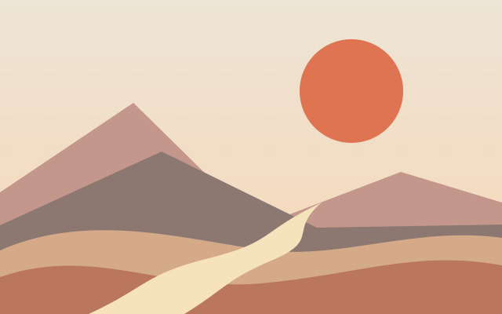
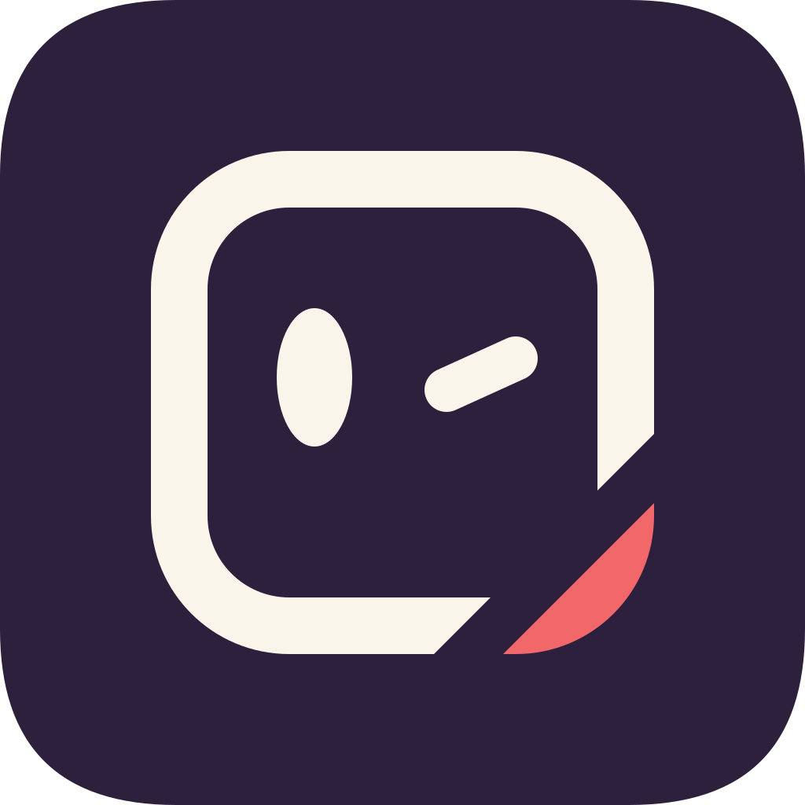

A screenshot says more.
Select a region, add an arrow or a note, and cover details you want to keep private. Copy it into your next conversation.
A screenshot. A quick recording.
A clearer way to show what you
mean.
Free & open source · Mac, Windows & Linux · Early preview

A reference, right where you need it.
The bug you spotted. The idea you found.
The steps that are
easier to see.
Give them a little clarity.
Select a region, add an arrow or a note, and cover details you want to keep private. Copy it into your next conversation.
Pin a capture over your other windows. Resize it, adjust its opacity, and keep working without the back-and-forth.
Record a walkthrough and cut the extra bits. On Mac, split, reorder, adjust speed, and edit audio before exporting to MP4.
Keep the tools you reach for. Hide the ones you don’t. Arrange your screenshot toolbar to fit the way you think.
Tool management & plugins · macOS previewAn example toolbar. Your app settings stay yours.

READY WHEN YOU AREPick your computer. Download. Make your first capture.
Choose the version for your desktop computer.
Apple Silicon · macOS 26 or later
The full toolkit, including the new video timeline, text recognition, and plugins.
Download for Mac ZIP download · Apple M-series chipsThis preview is not yet notarized by Apple. If macOS blocks opening it, review the message in System Settings → Privacy & Security.
Already using Mooji Cut? Open Settings → Updates in the app.
Windows 10 / 11 · Intel or AMD 64-bit
Capture, annotate, pin, and make simple screen recordings. No installer needed.
Download for Windows ZIP download · Portable appMoojiCut.exe. Find
Mooji Cut in your system tray to start capturing.
This preview is unsigned, so Windows may show an unknown-publisher notice. Recordings currently have no audio; the new Mac timeline and plugins are not yet available on Windows.
Ubuntu 22.04+ or compatible · x86_64
Screenshots, annotation, and pinned references for your Linux desktop.
Download for Linux tar.gz download · glibc 2.35+./launch.sh in its
folder. Requires GTK 3, Ayatana AppIndicator, and libcurl.
On Ubuntu:
sudo apt install libgtk-3-0 libayatana-appindicator3-1
libcurl4
X11 capture is tested. Wayland depends on your desktop’s screenshot portal. Screen recording is not available on Linux yet.
Yes. Mooji Cut is free and open source under the MIT license. Download the app without an account, or explore and contribute to the code on GitHub.
Captures and edits are processed on your computer. Copy screenshots to your clipboard or save files where you choose. Mooji Cut does not automatically upload your captures to a cloud gallery.
Not yet. All three platforms support screenshots and annotation. Mac currently has the fullest feature set, including the new video editor, OCR, translation, and plugin management. Windows supports silent screen recording with its existing editor. Linux does not yet support recording.
Mooji Cut is actively being developed, and you may encounter rough edges. Scrolling capture is currently disabled. Multi-source video editing, subtitles, and transitions are not part of this release. Check the release notes for the exact scope of each version.
On Mac, choose which screenshot tools appear and change their order in Settings → Plugin Management. Import compatible precompiled plugin ZIPs to add tools. The current plugin API works with capture metadata; it does not expose image pixels or network access.